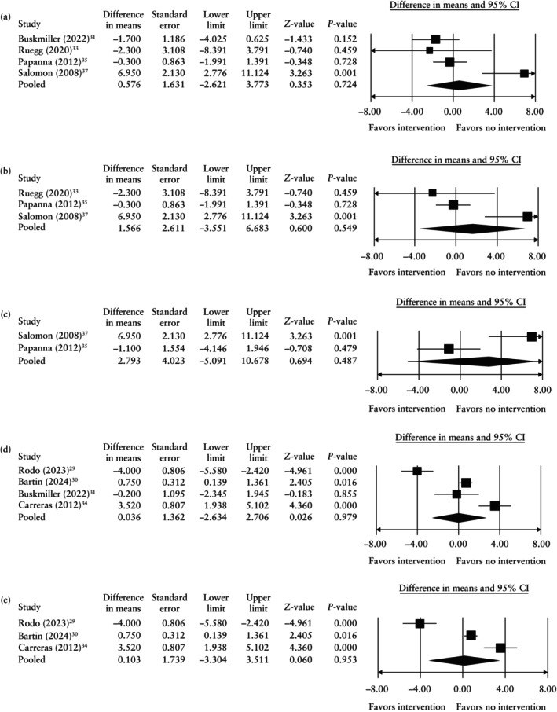
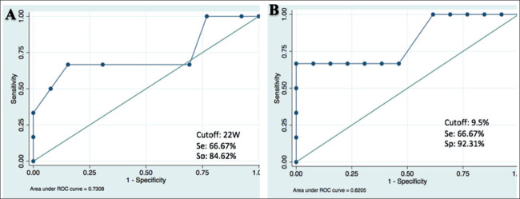

587 — Dự phòng sinh non sau laser TTTS: bán khâu, vòng nang, progesterone & theo dõi cổ tử cung / Preterm birth prevention after fetoscopic laser for TTTS
Tags: pattern:sinh-non-sau-laser pattern:co-tu-cung-ngan vung:co-tu-cung vung:thai-nhi score:CL-25mm protocol:FLS-theo-doi protocol:cerclage-pessary
Mức chắc chắn (certainty): tổng hợp y văn (literature synthesis) — số liệu chính từ phân tích gộp 10 nghiên cứu/1.159 thai kỳ (PMC12209700, GRADE rất thấp), đoàn hệ Hà Nội 21 ca sau laser (PMC11813210), và bối cảnh song thai từ PMC11019523; ảnh minh họa từ bài có bản quyền mở, không phải ca của nhóm.
1. Tổng quan bệnh học – cơ chế hình ảnh
1.1. Vì sao sau laser TTTS vẫn sinh non — ba cơ chế chồng lên nhau
- Căng quá mức tử cung (uterine overdistension): TTTS có đa ối ở thai nhận; dù laser làm giảm tuần hoàn bất thường, thể tích ối và tử cung căng vẫn tồn tại một thời gian → cổ tử cung ngắn lại và chuyển dạ sớm.
- Tổn thương cơ học do fetoscopy (iatrogenic): trocar/ống soi xuyên qua màng ối tạo khiếm khuyết màng — cửa vào của PPROM và nhiễm trùng ối. Đây là lý do sinh non sau laser không giống sinh non ở song thai thông thường.
- Viêm – nhiễm trùng dưới lâm sàng: phản ứng viêm tại chỗ sau thủ thuật, chorioamnionitis, tách màng ối (chorioamniotic separation) làm màng yếu và dễ vỡ.
- Hệ quả lâm sàng: can thiệp "chuẩn" của sinh non (bán khâu, vòng nang, progesterone) nhắm vào cổ tử cung — nhưng ở đây ổ bệnh chính có thể nằm ở màng ối/tử cung căng, nên hiệu quả bị pha loãng.
1.2. Ngưỡng định lượng phải nhớ
- Song thai nói chung: sinh < 37 tuần tới 50%; < 34 tuần ~20%; < 32 tuần ~10% (PMC12209700).
- Sau laser TTTS (đoàn hệ Hà Nội, 21 ca laser chọn lọc dây rốn — selective laser umbilical cord coagulation): sinh non 52,6%; 31,6% < 34 tuần; tuổi thai sinh trung bình 34,7 ± 4,3 tuần; thời gian giữ thai sau mổ trung bình 12,97 tuần (PMC11813210). Lưu ý phản biện: kỹ thuật này khác FLS tiêu chuẩn (đốt toàn bộ miệng nối), nên số liệu dự báo chỉ mang tính tham chiếu.
- Hai yếu tố dự báo mạnh sau laser:
- Cổ tử cung giảm > 9,5% trong 48 giờ sau mổ → nguy cơ sinh non tăng 8,7 lần (p = 0,006).
- Mổ khi thai > 22 tuần → nguy cơ sinh non tăng 4,3 lần (p = 0,025).
- Bằng chứng can thiệp: 10 nghiên cứu, 1.159 thai kỳ MCDA có TTTS đã laser; chỉ 1 RCT; chất lượng bằng chứng GRADE rất thấp (PMC12209700).
1.3. TẠI SAO bán khâu/vòng nang thất bại — đọc đúng con số
- Bán khâu (cerclage) so với không can thiệp, chênh tuổi thai sinh (mean difference, tuần):
- CL < 30 mm: +0,58 tuần (KTC 95% −2,62 đến 3,73).
- CL < 25 mm: +1,57 tuần (−3,55 đến 6,68).
- CL < 20 mm: +2,08 tuần (−2,63 đến 6,79).
- CL < 15 mm: +2,79 tuần (−5,09 đến 10,68). → Không có mốc nào đạt ý nghĩa thống kê; khoảng tin cậy rất rộng vì cỡ mẫu nhỏ.
- Vòng nang (pessary): CL < 30 mm +0,04 tuần (−2,63 đến 2,71); CL < 25 mm +0,10 tuần (−3,30 đến 3,51) — không khác biệt.
- Nghịch lý cần phản biện: ở nhóm CL < 30 mm, bán khâu có nguy cơ sinh < 32 tuần CAO hơn (OR 5,20; 2,17–12,46) và < 28 tuần (OR 3,48; 1,74–6,99). Đây gần như chắc chắn là confounding by indication (bán khâu được đặt cho những cổ tử cung xấu nhất, màng đã bong, hoặc sau PPROM) — không được đọc là "bán khâu gây sinh non".
2. Mẫu hình + chẩn đoán phân biệt theo vị trí (gamut)
2.1. Gamut nguyên nhân sinh non SAU laser (theo thứ tự cần loại trừ)
- PPROM do thủ thuật (iatrogenic PPROM): rỉ ối sớm sau mổ, thường liên quan vị trí trocar; màng vỡ không tự liền.
- PPROM tự phát / vỡ ối non: có thể do nhiễm trùng, đa ối, hoặc màng mỏng đi sau can thiệp.
- Chuyển dạ sinh non do căng tử cung: tử cung còn đa ối, cổ tử cung ngắn dần, cơn co xuất hiện.
- Nhiễm trùng ối (chorioamnionitis): sốt, đau tử cung, dịch ối hôi; nguy cơ cao hơn khi thủ thuật kéo dài/nhiều lần chọc.
- Hở cổ tử cung / cổ tử cung ngắn: có thể có từ trước hoặc mới xuất hiện sau laser; là yếu tố dự báo, không nhất thiết là nguyên nhân.
- Tách màng ối (chorioamniotic separation): màng bong khỏi thành tử cung sau thủ thuật → dễ vỡ, dễ nhiễm trùng.
- Chỉ định sinh vì thai: TTTS tái phát, thai lưu một bên, Doppler rốn bất thường, thai chậm phát triển nặng.
2.2. Mẫu hình "cổ tử cung sau laser" — đọc động học, không đọc một lần
- Đo CL ngay trước laser (nền), 24–48 giờ sau laser, rồi mỗi 2 tuần đến 28–32 tuần.
- Dấu hiệu nguy cơ: CL giảm > 9,5% trong 48 giờ; CL < 25 mm; phễu hóa (funneling); màng ối lồi qua lỗ trong.
- Phân biệt với "cổ tử cung ngắn do co": đo lại khi hết cơn co, bàng quang trống, cùng một người đo nếu có thể.
3. Bảng so sánh phân biệt (ma trận đối chiếu)
Bảng so sánh chiến lược dự phòng sinh non sau laser (không phải bệnh lý) — cột Chốt vào/Chốt loại là chỉ định và phản chỉ định theo bằng chứng hiện có.
| Chiến lược (strategy) | Cơ chế nhắm tới | Chốt vào (rule-in) | Chốt loại (rule-out) | Gợi ý xác nhận |
|---|---|---|---|---|
| Bán khâu (cerclage) | Cơ học: giữ cổ tử cung | Chỉ cá thể hóa: cổ tử cung rất ngắn + tiền sử sinh non + không nhiễm trùng, sau khi hội chẩn | Không đặt thường quy sau laser; không đặt khi màng ối sa/nhiễm trùng/PPROM | Phân tích gộp: không tăng tuổi thai ở mọi ngưỡng CL (GRADE rất thấp) |
| Vòng nang (pessary) | Phân bố lực, giữ cổ tử cung | Chỉ trong nghiên cứu/đồng thuận địa phương | Không dùng thường quy sau laser | RCT Rodo 2023 (137 ca) dừng vì vô ích; gộp +0,04 tuần |
| Progesterone âm đạo | Giảm co, giữ cổ tử cung | Cân nhắc khi CL ngắn và chưa có bằng chứng tốt hơn | Không xem là chuẩn sau laser | Không gộp được dữ liệu; nghiên cứu duy nhất không có lợi |
| Indomethacin / giảm gò | Giảm cơn co, hoãn sinh ngắn hạn | Cân nhắc cơn co cấp trong lúc chờ steroid | Không dùng dài hạn (nguy cơ thiểu ối, đóng ống động mạch thai) | Chỉ 1 nghiên cứu 411 ca (Mustafa 2022); không gộp |
| Theo dõi + corticosteroid + sinh đúng lúc | Tối ưu trưởng thành phổi, tránh sinh quá sớm | Mọi thai sau laser có nguy cơ sinh non | Không thay thế bằng can thiệp cổ tử cung khi chưa có bằng chứng | Steroid 24+0–33+6 tuần; magnesium < 32 tuần |
3.1. Dấu hiệu chốt trong 3 giây
- Sau laser, cổ tử cung ngắn KHÔNG đồng nghĩa phải đặt bán khâu — bằng chứng không ủng hộ.
- Đo CL 24–48 giờ sau mổ quan trọng hơn một lần đo trước mổ: giảm > 9,5% là dấu hiệu nguy cơ.
- Ưu tiên corticosteroid + theo dõi sát hơn can thiệp cổ tử cung không bằng chứng.
- Nghịch lý OR 5,20 là do chỉ định, không phải do bán khâu gây hại.
4. Protocol chụp + hệ phân độ/điểm chuẩn hóa
4.1. Trước laser
- Siêu âm xác định TTTS (Quintero), đo DVP, bàng quang, Doppler rốn/MCA/ống tĩnh mạch, đo CL qua ngã âm đạo.
- Loại trừ nhiễm trùng trước thủ thuật (CRP, bạch cầu, cấy âm đạo/cổ tử cung khi có triệu chứng).
- Tư vấn: nguy cơ sinh non sau laser cao; giải thích rằng can thiệp cổ tử cung chưa có bằng chứng.
- Kỹ thuật: trocar nhỏ, vào qua thành bụng tránh mạch máu bánh nhau, đốt toàn bộ miệng nối, giảm ối đủ để giảm căng nhưng tránh màng tách quá mức.
4.2. Sau laser — lịch theo dõi đề nghị
| Thời điểm | Việc làm | Ngưỡng / ghi chú |
|---|---|---|
| 24–48 giờ | Đo CL, siêu âm kiểm tra dịch ối, tim thai, màng ối | CL giảm > 9,5% = nguy cơ cao |
| 1 tuần | Siêu âm + CL nếu lần đầu bất thường | Tìm PPROM, tách màng, chorioamnionitis |
| Mỗi 2 tuần đến 28–32 tuần | CL + sinh trắc + Doppler | Không có ngưỡng can thiệp được chứng minh; dùng để tư vấn và chuyển tuyến |
| 24+0–33+6 tuần | Corticosteroid khi nguy cơ sinh trong 7 ngày | Betamethasone 12 mg × 2 liều cách 24 giờ, hoặc dexamethasone 6 mg × 4 liều cách 12 giờ |
| < 32 tuần | Magnesium sulfate bảo vệ thần kinh thai | Khi có nguy cơ sinh trong 24 giờ |
| Khi PPROM | Kháng sinh phổ rộng (latency), theo dõi nhiễm trùng | Không đặt bán khâu khi đã có PPROM/màng sa |
| ≥ 34 tuần | Cân nhắc sinh nếu có chỉ định sản khoa | Không kéo dài khi có chorioamnionitis |
4.3. Flowchart quyết định sau laser
flowchart TD
A[Sau laser TTTS] --> B[Do co tu cung 24-48 gio]
B --> C{Co PPROM hoac mang oi sa}
C -->|Co| D[Khang sinh - theo doi nhiem trung - KHONG ban khau]
C -->|Khong| E{CL giam hon 9,5 phan tram hoac CL duoi 25 mm}
E -->|Khong| F[Tiep tuc theo doi 2 tuan - corticosteroid khi can]
E -->|Co| G[Danh gia nhiem trung va mang oi]
G --> H{Co nhiem trung hoac mang da sa}
H -->|Co| D
H -->|Khong| I[Corticosteroid - magnesium neu duoi 32 tuan - hoi chan]
I --> J[Khong dat ban khau hoac vong nang thuong quy]
J --> K[Theo doi sat - sinh khi co chi dinh]
Ghi chú: không có hệ RADS cho tình huống này; flowchart tổng hợp từ PMC12209700 (bằng chứng can thiệp), PMC11813210 (yếu tố dự báo) và thực hành corticosteroid/magnesium chuẩn.
5. Biến thể bình thường và cạm bẫy
- Confounding by indication: nhóm được đặt bán khâu là nhóm cổ tử cung xấu nhất → OR sinh non cao không chứng minh bán khâu có hại. Muốn đánh giá đúng phải RCT.
- Chỉ có 1 RCT (Rodo 2023, 137 ca) và dừng vì vô ích, không phải vì tai biến — đừng trích dẫn thành "pessary gây hại".
- Cỡ mẫu nhỏ ở nhóm CL < 15 mm: 58 ca có bán khâu so với 27 ca không — khoảng tin cậy −5 đến +10 tuần, không thể kết luận.
- Progesterone không gộp được: đừng suy từ đơn thai/ song thai không laser sang nhóm sau laser.
- Indomethacin: chỉ 1 nghiên cứu, không gộp; không dùng dài hạn vì nguy cơ thiểu ối và đóng sớm ống động mạch.
- Nhầm tách màng ối với PPROM: tách màng (chorioamniotic separation) có thể không rỉ ối nhưng vẫn tăng nguy cơ; PPROM cần xác nhận bằng dịch ối/ferning/IGFBP-1.
- Đo CL sau mổ khi màng đang tách: kết quả có thể giả ngắn/giả dài do màng và dịch; đọc cùng hình ảnh, không chỉ số.
- Áp ngưỡng CL 25 mm của song thai thường (bài 569) vào sau laser: ngưỡng này chưa được chứng minh trong nhóm sau laser — dùng để tư vấn, không để đặt bán khâu mặc định.
6. Tự lượng giá — Blind Quiz
Ca 1 — Đọc biểu đồ rừng: bán khâu và vòng nang sau laser. Đọc trước, kết luận sau.

- Câu hỏi: (1) Pooled mean difference ở CL < 30 mm là bao nhiêu? (2) Có nhóm nào đạt ý nghĩa? (3) Vì sao khoảng tin cậy rộng?
Bấm để hiện đáp án (findings + kết luận)
- Findings: bán khâu CL < 30 mm +0,58 tuần (−2,62 đến 3,73); CL < 25 mm +1,57 (−3,55 đến 6,68); CL < 15 mm +2,79 (−5,09 đến 10,68). Vòng nang CL < 30 mm +0,04 (−2,63 đến 2,71); CL < 25 mm +0,10 (−3,30 đến 3,51).
- Kết luận: không chiến lược nào tăng tuổi thai sinh có ý nghĩa; bằng chứng GRADE rất thấp.
- Vì sao KTC rộng: cỡ mẫu nhỏ, ít nghiên cứu, thiếu nhóm chứng trong nhiều bài → ước lượng không chính xác.
- Nguồn ảnh: Eltaweel N et al., Ultrasound Obstet Gynecol 2025 (PMC12209700), CC BY 4.0.
Ca 2 — Ca sau laser: dự báo sinh non bằng thay đổi cổ tử cung. Đọc ROC.

- Gợi ý lâm sàng: TTTS giai đoạn III–IV, laser ở 16–26 tuần; theo dõi CL trước và sau mổ.
- Câu hỏi: (1) Hai yếu tố nào vào mô hình? (2) Ngưỡng nào có ý nghĩa? (3) Ứng dụng thực hành?
Bấm để hiện đáp án
- Findings: mô hình gồm tuổi thai lúc mổ (A) và mức giảm CL trong 48 giờ (B). Mổ > 22 tuần → Se 66,67%, Sp 84,62%, AUC 0,7308; CL giảm > 9,5% → Se 66,67%, Sp 92,31%, AUC 0,8205. Trên phân tích nguy cơ: mổ > 22 tuần tăng 4,3 lần (p = 0,025); CL giảm > 9,5% tăng 8,7 lần (p = 0,006).
- Kết cục đoàn hệ: sinh non 52,6%, 31,6% < 34 tuần, tuổi thai sinh trung bình 34,7 ± 4,3 tuần.
- Ứng dụng: đo CL trước và 24–48 giờ sau laser; nếu giảm > 9,5% → theo dõi sát, tư vấn, chuyển tuyến; không tự động đặt bán khâu vì bằng chứng can thiệp chưa có.
- Phản biện: đoàn hệ 21 ca, một trung tâm, kỹ thuật laser chọn lọc dây rốn (khác FLS tiêu chuẩn), không có nhóm chứng can thiệp — dự báo tốt hơn điều trị.
- Nguồn ảnh: Dat DT et al., Med Arch 2024 (PMC11813210), CC BY-NC 4.0.
Ca 3 — Thai 26 tuần sau laser 5 ngày, CL 18 mm, không co, không rỉ ối. Xử trí?
- Câu hỏi: (1) Có đặt bán khâu không? (2) Cần làm gì trước khi quyết định? (3) Tư vấn gì cho gia đình?
Bấm để hiện đáp án
- Không đặt bán khâu thường quy: phân tích gộp không cho thấy tăng tuổi thai; đặt trong bối cảnh màng đã tổn thương có thể tăng nhiễm trùng.
- Việc cần làm: loại trừ nhiễm trùng ối/PPROM (khám, CRP/bạch cầu, cấy, xét nghiệm dịch ối nếu rỉ), đo lại CL, đánh giá tách màng ối, tim thai, Doppler.
- Tư vấn: nguy cơ sinh non cao; corticosteroid nếu nguy cơ sinh trong 7 ngày; magnesium nếu < 32 tuần; theo dõi sát và hội chẩn bào thai–sơ sinh.
- Không hứa rằng can thiệp cổ tử cung sẽ kéo dài thai kỳ — bằng chứng hiện tại không ủng hộ.
Bài liên quan chéo
- 500 – Tổng quan Hệ Vú & Sản Phụ khoa
- 566 – Song thai: chorionicity, TTTS & TAPS (chẩn đoán TTTS, Quintero, chỉ định laser)
- 569 – Sinh non ở song thai: sàng lọc cổ tử cung & dự phòng (ngưỡng CL 25 mm, progesterone, bán khâu, vòng nang)
- 586 – Song thai một ối: chẩn đoán, quấn dây rốn & thời điểm sinh (theo dõi song thai MC nguy cơ cao)
- 573 – Hở cổ tử cung & bán khâu (kỹ thuật, chỉ định, biến chứng)
- 568 – TRAP & thai acardiac (can thiệp bào thai khác)
Không dùng để chẩn đoán độc lập khi chưa có người hướng dẫn.